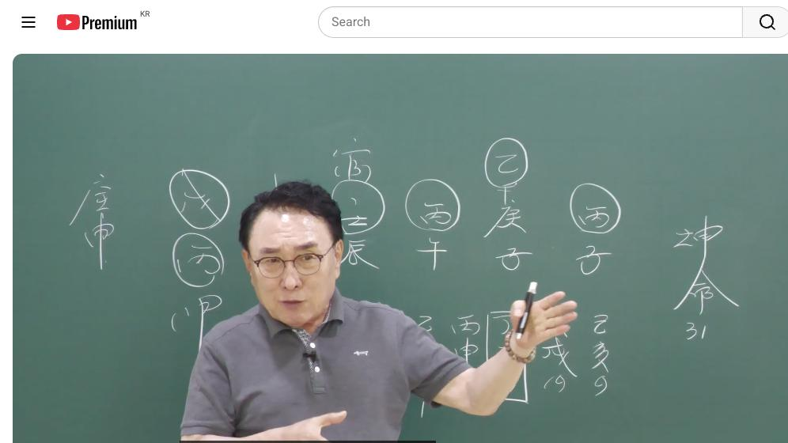

남촌물상TV 전체 문서 › 동영상 V0205
친정 부모 재산이 남편 출세 시킨다

| 문서 번호 | V0205 (동영상) |
|---|---|
| 영상 URL | https://www.youtube.com/watch?v=Lxxtg-LJy5k |
| 영상 ID | Lxxtg-LJy5k |
| 게시일 | 2026-08-26 |
| 길이 | 29:55 (1795초) |
| 조회수 | 150회 (수집 시점 기준) |
| 카테고리 | Education |
| 자막 | ko (자동생성) |
| 수집 시각 | 2026-08-30 17:03 (KST) |
영상 설명 (YouTube 설명 원문 그대로)
김대영 교수 사주 상담
010-3139-645 예약필수
사주상담 # 물상론 사주# 명리학# 성명학# 궁합# 택일#
물형상# 운명학# 남촌물상론#
전체 자막 (713구간 · 타임스탬프 클릭 시 해당 장면으로 이동)
[0:00]자 오늘은 지난번에 제가 그 사이 그
[0:04]뭐야요 처가집터을 마이보 사주 해
[0:06]줬잖아요.
[0:07]>> 그 집에 부인입니다. 자, 여자
[0:09]31세 병자 경자 병호 임진인데이
[0:14]사람 사주는 국내에서 살게 되면은
[0:17]되면은 기간제 교사밖에 못 하는데
[0:21]만약에이 사람이 어렸을 때 진료
[0:24]상담에서
[0:26]유학을 갖게 된다면 모토의 큰 재방
[0:30]대륙 재방의 나라로 가면 안정이 되
[0:32]관이 안정이 내 남편 내 안정이 되고
[0:36]그다음에 공부를 하게 된 목가통령
[0:38]꽃을 술피게 되고 자 그다음에
[0:41]새로운이 지지에 신자진 신자진 하게
[0:44]되면 유통의 관계된 사업라도 크게
[0:47]돈을 벌 수 있고 성장할 수 있다.
[0:50]이러한 사주가 된다는 것을 설명을
[0:52]드린다 그 말이에요. 그래서 위학을
[0:54]가고 안 가느냐 진로 상담이 이렇게
[0:56]중요한 것을 설명을 드렸다 없이
[0:59]다니는 사람도 있어요. 그래서 이제이
[1:02]사조에서 그 안 맞는지 한 사람도
[1:04]그런 뜻에 비유해 보면 있습니다.
[1:07]그런 것은 우리가 생각할 따름이고
[1:09]그러면 자이 사주를 쭉 보면은 없으면
[1:13]일단 뭐가 그 뭐를 갖고 싶기 때문에
[1:16]교육에 관련일 할 거예요. 그건
[1:18]교육의 기관직 그 강사입니다. 그까
[1:21]계약직이죠. 자 그러면이
[1:24]사람이 이제에 사주 구성을 보면은
[1:27]나와 병호일주예요. 병호일주.
[1:30]병호일주. 근데 나하고 같은 병호가
[1:33]또 있어요. 그죠? 그럼 이제 여기
[1:35]또 국가제가 또 있어요. 근데 요거
[1:37]이제 우리는 뭐 어 뭐 웃사람이다 뭐
[1:40]그렇게도 얘기합니다. 같이 붙어
[1:43]있어야 정상이에요. 만약에 병화가
[1:45]여기 있다고 생각하면 엄마로 할 수도
[1:48]있는 거예요. 근데 떨어져 있으면
[1:50]아니에요. 이제 그 착각 가지면 안
[1:52]된다.
[1:53]자 그러면이 사람이 왜 그러면 기관제
[1:56]교사를 할까 하는 것도 한번 판단해
[1:59]보자 그 말입니다. 한글건 자
[2:01]여기에서이 사람이 그 목을 만들 수
[2:04]있는 천관에 끌어온 자가 뭐 있어요?
[2:06]천관에서 목을 끌어온 자가
[2:08]>> 자 경금에서 을목을 끌고 오잖아요.
[2:11]을목을 끌고 가요. 그러 을목에 소위
[2:15]그 교육을 한다는 거 내가 을목을
[2:19]끌고 가서 만드는 교육이에요. 그죠?
[2:22]근데 교육을 자 목이 있다 간들
[2:25]천간에 땅이 없어.
[2:27]자, 우리 모든 것은 교육을 하게
[2:29]되면은 나무가 살아나가는 땅이
[2:32]존재해야 되잖아요. 천간에 없어요.
[2:34]그러니까이 사람이 정유지 교사나 이런
[2:37]갈 수 없는 사람이에요. 근데 목이
[2:40]없기 때문에 그 행위를 하고 싶은
[2:42]거다. 자, 그럼 우리가 보통 보면은
[2:44]어떤 사람 자기 적성에 보면 넌 하다
[2:47]적성이 없는 거 같은데 왜 그걸 하고
[2:49]있지? 이런 사람 형태 있잖아요.
[2:52]이런 케스가 그렇게 보시면 돼요.
[2:54]자기가 목이라는 갑목의 나무가 무토에
[2:58]심어지고 저같이 무토와 갑목이
[3:01]심어지면 교육을 하고 있잖아요. 근데
[3:04]자기가 목이 있어도 심을 땅이 없어.
[3:07]그리고이 목을 목을 가공할 수밖에
[3:11]없다. 합을 해야 된다. 그런 얘기
[3:13]합을 해야 된다. 자, 그러면이
[3:15]사람은 또 하나 더 보면은
[3:18]자, 목을 만들 수 있는 자가 어디
[3:20]있냐? 그것이 뭔데요?
[3:22]>> 자, 여기 임수에서 임수에서 정화를
[3:27]끌고 오면
[3:29]끌고 오면 역시 을목인데
[3:33]똑같이 을목을 경 합을 해야 되는
[3:34]사주예요. 그러니이 사람이 정기
[3:36]교육자가 되겠습니까? 안 되지. 자,
[3:38]그다음에이 사람이 이제 쭉 보시면은이
[3:42]관이라는게 우리가 보죠. 관.이 관이
[3:44]누구예요? 관이. 관이 병화의 관.
[3:48]자, 임수 아니에요. 자, 임수가
[3:51]관이에요. 그러면 자, 우리가 항시이
[3:54]사람이 관이라는 어떤 증세에 있을까?
[3:56]자, 임수가 관이다 그 말이에요.
[3:59]근데 관이 물이에요. 임수예요.
[4:02]자기가 병화가 뜨는 물은 참 좋죠.
[4:05]병화는 임수 뜨기를 좋아하니까이
[4:08]사람은 연상을 좋아해. 연화를
[4:09]좋아해.
[4:10]>> 연화를 좋아하죠.이
[4:12]연화를 좋아합니다. 왜? 자기가
[4:16]병하는 임수의 뜨기를 좋아해.
[4:19]밑에가 있잖아요. 그러니까 연화를
[4:21]좋아하는 거예요. 자, 그렇다고 봤을
[4:23]때이 사주의 특성을 쭉 보시면 이제
[4:26]그러면 자,이 관이란 특성을이 사람이
[4:29]어떤 관을 남자일까라고 보자 그
[4:31]말이에요. 남자일까? 관이 정착이 안
[4:34]돼요.이
[4:35]관이이 임수인데 임수가 무토가
[4:39]재방 역할을 해 줬을 때이 사람의
[4:42]관이 안정되는 거예요. 그죠? 남편이
[4:44]내 남편이 안정되게 살려면이
[4:48]무토운이 와서이 재방 역할을 해 줄
[4:52]때 안정적이다. 이렇게 볼 수
[4:54]있잖아요. 그죠? 자, 그러면 우리가
[4:58]이제 이런 거 봤을 때 뭘 보냐?
[5:00]그러면 이런 사람들이 만약에이
[5:03]국내에서 산다라고 할 때 운이
[5:05]여기까지 없잖아요. 불안정해.이 이
[5:08]19대 운에서 무술 대운이 끝나면이
[5:11]안 오잖아요. 안 와요. 그럼 남편이
[5:14]힘들지 않냐? 자, 이게 핵심인데
[5:18]제가 상담할 때 뭐라 기뻤어요?
[5:20]혹시네 남자 친구가 애국에서 살다온
[5:24]있냐고 물었다 그 말이에요. 그랬더니
[5:27]여덟 한 살 때 아버지가 미국을 가서
[5:31]거기서 8년 동안을 살고 한국에 온
[5:33]거예요. 그래서 그 사람을 만난
[5:35]겁니다. 이제이 아셨죠?
[5:38]자, 그러면 자기가 애국을 못 갈
[5:41]바에는 차라리 내 남자라는 관이
[5:46]애국에서 공부를 하고 온 사람이
[5:49]유학파가 좋다. 그런 얘기죠.
[5:51]그러니까 내가 못했던 것을 누가 해
[5:53]왔어? 남자가 유학을 가서 모든 걸
[5:57]갖춰서 온 여건이 된다. 자, 이렇게
[6:00]보실 수가 있는 거죠. 그러면이
[6:02]사람이 만약에 유학을 갔다고
[6:03]생각하자.
[6:05]유학을 갔다고. 자, 유학을 가게
[6:07]되면 첫째 어 어떤 나라로 가야 돼?
[6:10]어떤 나라로 대륙을 낀 나로 가다
[6:12]해요. 중국이나 미국이나 서주이나
[6:14]크게 대적 무토의 나라로 가라 이건데
[6:19]넓은 땅으로 가라는 얘기단 말이에요.
[6:22]그러면 또 뭐가 생길까요? 외국을
[6:25]가게 되. 자, 첫째 사주서 딱 보면
[6:28]자, 자기가 지금 병사주 아닙니까?
[6:31]>> 병화가 하나 더 더 생긴 거죠.
[6:33]>> 그렇죠? 그럼 쓰인이 하나가 됐죠.
[6:37]안정이죠. 태양이 안정적이다. 그
[6:40]대신 땅이이 임수를 갔는데 재방이
[6:44]튼튼하다.
[6:46]>> 그럼 그 재방 위에 없는 목이라는
[6:48]것은 교육이죠.
[6:50]>> 감목이라는이
[6:52]나무를 교육을 하게 되면이 조건이 탁
[6:55]맞아 떨어지게 되는 사주예요. 그죠?
[6:58]그러면 이런 사람들 어렸을 때 상담을
[7:00]어떻게 해 줘야 돼? 우리가 유학을
[7:02]보낼 수 있는 그런 환경이나 앞으로
[7:05]그렇게 키워 줘야만이이 사람이 제
[7:08]능력을 발휘할 수 있다라고 상담을 해
[7:11]주셔야 한다. 그 말입니다. 그래서
[7:13]이런 사람들이 진로상 여러분들이 항식
[7:15]이렇잖아요. 진로 상담을 잘해 주면
[7:18]그 사람이 일생일 때에 제대로 성장할
[7:21]수가 있고 또 진로 성장 하나를 잘
[7:24]못 하게 되면 국내에서 이렇게 산다
[7:26]그 말이에요. 이제 이해되셨죠?
[7:28]만약에 이분이 미국이 미국을 갔다
[7:30]생각합시다. 미국을 갔다 생각해요.
[7:32]그럼 자, 미국은 무슨 나라예요?
[7:35]>> 자, 경신의 나라. 경신의 나라.
[7:37]경신의 나라예요. 그러면 경이 두
[7:39]경급이 두 개인데요. 할 수도
[7:41]있잖아요.
[7:41]>> 네.
[7:42]>> 두 개. 경주 두 개면 어때요?
[7:44]평화가 취할 수 있지. 또 무리의
[7:46]태양이 비치니까 더 좋지. 본인은.
[7:49]그렇잖아요. 그러면 금들이 놀아도
[7:51]취할 수 있는게 병화를 취할 수 있다
[7:53]그랬잖아요. 경금을. 그럼 자이 뜻을
[7:55]무슨 얘기라고 표현을 하냐면 새로운
[7:58]미국의 땅에 가서 금이 두 개
[8:00]생겼다니 너는 두 가지의 사업을 할
[8:02]수가 있어라고 얘기할 수 있다. 두
[8:04]군데 돈을 보니까 그 얘기 아닙니까?
[8:07]자 그렇게 이해를 하시면 된다 그
[8:10]말입니다. 그러면이 사람이 만약에
[8:12]뮤직에서 공부를 했어. 자 꽃도
[8:15]피어. 태양은 뭐예요? 꽃 피고지는
[8:18]좋아한 것 무리에 뜨기를 좋아하지만은
[8:21]역할은
[8:23]갑목에 꽃을 펴준 역할 하는
[8:24]거거든요. 그러면이 사람이 미국에서
[8:26]공부를 했어. 갑목에 꽃을 폈어.
[8:29]목화통명됐죠.
[8:30]그럼 잘 보세요. 목화 통명이 됐다는
[8:34]얘기는 쉽게에서 지지의 잇란 나무가
[8:38]심어졌다고 봐야죠. 그죠? 공부를
[8:39]미기 하고 공부키 인목이 있다고
[8:41]봐요.
[8:42]>> 그럼 우리가 물건 갔으니까 임수의
[8:44]뿌리가 무슨 수? 해수
[8:47]>> 해수야. 해수 그러면 자기의 뿔이 신
[8:52]그러면 인신사 돼요? 안 돼요?
[8:54]>> 되잖아요. 그럼 미국에 사업을 한다
[8:56]했을 때 마케팅 전력이 잘 돼? 안
[8:57]돼? 되구나.
[9:00]이렇게 쉽게 답을 정의해 줄 수가
[9:03]있다 그 말입니다. 그래서 우리가
[9:04]이제 항시 얘기지만 어떤 사람 어린
[9:06]진로 상담할 때 네가 어떻게 크면 너
[9:09]잘될 수 있다 하는 것을 알고 해주면
[9:11]성공하는 거예요. 그래서 사람이
[9:15]국내에서 살 때는 너는이 기관제
[9:16]교사벽이 못 해라고
[9:19]정해졌다면
[9:21]만약에 가서 네가 사다 이러한 이건이
[9:24]조송되는 거죠. 지금 제가 한 얘기를
[9:27]가서 미국이와서 공부도 크게 상종할
[9:29]수 있고 자 태양이 세 개가 하나로
[9:32]되기 때문에 결과적으로 꽃도 핀다.
[9:35]자 여기서 태양 세 개는 이미지 어떤
[9:37]이미지냐? 태양의 세 개가 하나가
[9:40]됐다는 얘기는 상계국을 들쳐갈 수
[9:42]있던 그런 능력을 소유할 수 있다.
[9:44]자 이렇게 봐요. 애국에서 많이
[9:45]공부를 했어. 그럼이 사람 미국에만
[9:46]존재할까요?
[9:48]자, 중국도 갈 수가 있고 프랑스도
[9:51]갈 수 있고 이런 여러 나라를 태양의
[9:54]세계에 있는 우리는 한국에 있는 태양
[9:57]하나가 저 미국에 갔을 때 밤시간
[10:00]날씨가 태양이 뜨는 태양이 그런
[10:02]시간의 관계상으로 봤을 때 세계
[10:05]나라에 대한 일을 본인이 할 수 있는
[10:08]능력이 소지가 된다. 이렇게
[10:10]이해하시면 되죠. 뭘로? 사업으로.
[10:13]마케팅 전략할 수 있다. 이제 이것이
[10:16]지금이 사람의 진로 상담할 때 정해진
[10:20]답이에요. 그러니까 우리가 제가 항시
[10:23]하는 얘기가 뭐예요? 일생일대에서
[10:26]누구를 만나느냐가 1번. 그다음에
[10:29]어떤 환경에 살았느냐가 자기 팔자를
[10:32]바꿀 수 있다라고 저는 주장을
[10:33]하잖아요. 그러면이 사람이 그렇게
[10:35]항의를 가졌으면 잘 될 수 있잖아요.
[10:37]사주 보더라도. 근데 국내에서 살다
[10:41]보니까 안 되더라 그 말입니다. 결국
[10:44]이거예요. 그러 저는 오늘 중요한
[10:46]얘기는 이러한 사주가 국내 사주들은
[10:49]이건데 기관제 교사밖에 안 되는데
[10:53]미국에 가서 공부를 했다면 유학을
[10:55]가서 공부했다면이 사람은 대성공할 수
[10:58]있고 사업가를 성공할 수 있고 또
[11:00]미국에 가게 그 해를 가게 되면
[11:03]임수의 내 관이 튼튼해 물이 임수물을
[11:06]튼튼한 그러한 남자를 만날 수 있게
[11:09]된다 그 말입니다.
[11:11]그게 모든 조건이 국내에 있을 때는
[11:14]이러한 조건밖에 안 되는데이 사람
[11:17]자체로 사주로 오면 예로 하면 이러한
[11:19]여러 가지 조건이 돼. 그러면 자
[11:22]사업도 무슨 사업을 잘하느냐? 자기가
[11:25]신자진으로 돼 있잖아. 사주가. 자
[11:27]경기 신 신자진이 되기 때문에
[11:29]유통업에 관계된 쪽으로이 사람이
[11:31]사업을 했으면 제2의 쿠팡 사장도 될
[11:34]수 있는. 자, 이런 것을 우리가
[11:36]전체적인 사주 흐름을 놓고 봤을 때
[11:39]어떻게 그 사람의 진로 결정해서 애를
[11:43]성장시킬 수 있느냐에 따라서 제대로
[11:47]출세하느냐, 좋은 신랑을 만나느냐
[11:51]이런 관계도 다 여기에 형성이 돼
[11:53]있다 그 말입니다. 자, 이해되셨죠?
[11:56]그러니까 우리는 어떻게 해야 돼?
[11:58]진로이 지금 어렸을 때 진로 상담이
[12:00]그렇게 중요하다는 것을 알 수 있죠.
[12:03]지금 다른 그 고전 명리에서는 우리
[12:07]같은 이런 답을 찾아줄 수가 없어요.
[12:09]고전 명리로서는 도저히 제가 하는
[12:12]강의를 그대로 따라갈 수도 없습니다.
[12:15]지금 저희가 개발한이 학문이 얼마나
[12:19]정확한 것 저는 아주 확신을 해요.
[12:21]그나마도이 사람이 지금 다행인 것은
[12:24]미국에서 8년 동안 살다 오는 그
[12:27]남자를 만났기 때문에 그래도 안정이
[12:29]된다. 자, 이해됐죠?
[12:32]자, 그래 여러분들이 제가 그
[12:34]공부하실 때 저는 그렇게 하잖아요.
[12:37]진로 상담을 잘하든지 또 사업성을
[12:40]잘하는 상담을 하든지 또 질병로를
[12:42]잘하는 상담을 하든지 이런 걸
[12:45]복합적으로 본이 잘하는 전공이 하나가
[12:47]필요하다. 우리가 박사하기를 봤더라도
[12:49]철학 박사가 있는 것이고 동양 철학
[12:50]박사가 있는 것이고 세형 철학 박사가
[12:52]있는 거고 다 분야별로 다 있다 그
[12:55]말입니다. 미래의 지각 박사도 있고
[12:58]이제 그런 것이 있듯이 우리도 그런
[13:00]전공을 살릴 수 있는 뭔가 주특기가
[13:02]있어야 된다. 그래야만이이
[13:05]시장에서 살아갈 수가 있고 이길 수
[13:07]있습니다. 저주비가 뭘 하나를 잘해?
[13:10]저뷰가 뭐를 하나 잘해 하는 핵심적인
[13:14]포인트를 하나씩 가지고 계시 그러면
[13:17]어디 가든 성공할 수 있어요. 절대이
[13:19]혼란스럽고 아무리 경기가 안 좋다
[13:21]할지라도
[13:23]온다 그 말입니다. 저도 지금 상담이
[13:25]계속 와요. 그 사람들이 다시
[13:27]겪어봤다는 사람이 오는 것이고 또
[13:29]우리 유튜브 보고도 그 자기하고 만든
[13:32]사람은 또 와요. 저는 옵니다.
[13:34]그러면 우리가 어떤 상담에서 보면 그
[13:37]일했던 노하우 제가 여러분들한테 내가
[13:40]경험했던이 자체를 가지고 전부 여분
[13:44]전수를 하고 있잖아요.이
[13:46]전수할 기회를 여러분들이 갖는 것만도
[13:49]저는 굉장히 다행으로 생각한다.
[13:52]근데 저는 제가 그 봤을 때 저는이
[13:55]병화운이 대운이 오고 있잖아요.
[13:57]그 없는 제가 제일 그리워하고
[14:00]기다렸던 대운이 10년 동 나와
[14:02]나요. 그래서 제가 볼 때는 10년
[14:04]동안을 아마 대적인 활동을 해야 되지
[14:07]않느냐라고 제가 봅니다. 그걸 준비한
[14:09]과정이 제가 지금 하고 있는 준비
[14:11]과정 제가 대적 명분을 그 활동 안
[14:14]하려면 다시 제가 하의를 받을 필요가
[14:17]없죠. 근데 제가 다시 지금 또다시
[14:20]이거 대적인 내 운이 왔기 때문에
[14:23]앞으로 10년 동안에 준비를 하고
[14:26]있는 과정으로 저는 보시면 돼요.
[14:27]그걸 준비를 하고 있었고 또 기회와서
[14:30]만들고 있다. 그래서 또다시 대학공을
[14:32]가서 또다시 제가 하기를 또다시 내가
[14:35]물상놀이란 자체에이 남물선 자체
[14:38]하기를 인정받고 싶어서 또 박사원을
[14:41]또 공부한다. 이것이 위원의
[14:43]일치했겠느냐? 저는 그렇게 생각 안
[14:45]해요. 자, 다른 사람들이 얘기할
[14:46]때는 뭐 나이 먹어서 무슨 놈 또
[14:49]하기를 또 받아요? 있는 하기나
[14:51]써먹고 말 이렇게 하는 사람도
[14:52]있어요. 그런데 저는 제가 생각할 때
[14:56]나라는 존재 의식이 앞으로 10년
[14:58]동안이 활동 기간이 있는데 대적인
[15:00]활동을 하려면 그래도 내가 만든
[15:03]학문을 주장하고 내가 만든 학문의
[15:06]우월성, 차별성 이런 걸 전부 다
[15:10]전파시키고 싶다. 이걸 나타고
[15:13]싶어요. 그 여러분들이 지금 그
[15:16]공부시한 것은 특이한 공부를 하고
[15:18]계시잖아요. 지금 전화 오신 분이고
[15:20]상당없이 뭐라고 하냐면 참 선생님
[15:23]특이한 간법을 쓰신다고 그렇게
[15:25]얘기하고 옵니다. 자기 근데이 저한테
[15:28]상담한 사람들은 명리를 전혀 모르는
[15:31]사람은 잘 안아 다 명리를 좀 알았던
[15:33]사람들이 저한테 상담하고 합니다.
[15:34]이유는 자기들이 공부해서 잘 안
[15:37]됐는데 선생님 강의를 들어보니까 역시
[15:41]잘된다. 그렇기 때문에 그 사람이
[15:43]상담하는 거거든요. 자, 여러분들은
[15:46]지금 제가 하는이 강의가 진짜
[15:50]명강해 될지 내 일생일 때 자우할지는
[15:54]분명히 제가 정해졌다고 봐요. 그래서
[15:57]확실하게 뭔가 하나씩을 잘할 수 있는
[16:00]것은 꼭 하나씩 필요해요. 자, 진로
[16:02]상담 잘할 것. 그다음에 또 사업성을
[16:05]잘할 것. 그다음에 또 뭐 질병론을
[16:08]잘할 것. 세 가지 중에서 한
[16:10]가지씩은 내가 잘할 수 있어라고 하는
[16:13]자신감 있는 것이 있어야 돼. 그래서
[16:15]그걸로서 소문이 나야 돼. 그래서 그
[16:18]사람들이 찾아오. 제가 볼 때는
[16:20]그렇습니다. 요즘 그 진로 상담을
[16:24]잘하시는게 굉장히 좋아요. 왜
[16:25]그러냐면 진로 상담은 요즘 애들을
[16:29]많이 안 나기 때문에 애들한테 신경
[16:32]굉장히 많이 쓰고 있잖아요. 제가 아
[16:34]요즘에서 지금 한국에도 보면 뭐 학교
[16:37]가면 엄마들이 뭐 차로 실로 다기고
[16:40]가서 뭐 데려오고 하지. 옛날 적을
[16:41]때 솔직히 뭐 엄마가 데로 와요.
[16:44]학교가 비 맞고 와도 뭐 칼식 벗고
[16:47]달려와도 쳐다보도 않지. 어떻게
[16:50]하면이 사람이 잘될 수 있는가를
[16:51]우리는 제시해 준다 그 말이야.
[16:52]우리는 지금 뭐 사주 그래요. 뭐
[16:54]네가 이러니까 너 이래 앞으로이
[16:56]사주가 이러니까 이렇다는 걸 얘기한게
[16:58]아니라 우리 물상은 너는 사주가
[17:02]이런데 너는 어떻게 하면 잘되라고
[17:04]하는 그 자체를 우리는 지금 알고
[17:07]있어야 돼요. 그걸 제가 설명하는
[17:09]거예요. 항시. 그러니까이 사람은
[17:12]국내에서 했을 때는 기관제 교사라
[17:15]정규 수동보다 기관 계약적으로 하다가
[17:17]많은 사주다 그 말이에요. 네가
[17:19]만약에 애국을 가서 공부를 했다면
[17:21]이런 현상이 나와. 이것을 제시해서
[17:24]여러분들한테 준 이유가 진로 상담이
[17:28]반드시 필요하고 성장하는 애들한테는
[17:31]꼭 우리가 해 줄 수 있는 얘기가
[17:33]있어야 돼.이 사람은 본래 뭘
[17:35]잘하겠어? 신자지 유통을 잘하게 된
[17:37]사람이. 근데 기관지 교사 여기
[17:39]유통할게 뭐 있어? 안 돼. 그러면
[17:42]자 학원에 대한 뭔가 어떤 그 교육의
[17:45]사업에 대한 유통밖에 할 수 없는
[17:47]거란 말이야. 근데 자기가 똑바로
[17:48]나무가 심을 수 있는 것이 없다 그
[17:50]말이에요. 그러니까 이것도 안 되고
[17:52]어정뛰기밖에 안 되는 거예요. 그래서
[17:55]그런 것을 확실하게 짚어갈 수 있다
[17:57]해서 꼭 그걸 명심하고 말씀을 드리는
[18:00]거예요. 자, 그러면은 지금부터 이제
[18:03]대운에 한번 설명을 드릴 건데 대운에
[18:07]자 기회대운이라 봐요. 기회대운 자
[18:10]기회대운 자 기예요.
[18:13]기가 오면 어떨까요? 기토가 오면은
[18:16]기토는 뭐예? 뭐예요? 자, 나의
[18:19]관의 관이야. 그렇잖아요. 그러면이
[18:23]기토가
[18:24]관에 어떻게 영향을 미치는가를 보라
[18:27]그 말이에요. 나하고 미치는 과정이.
[18:30]그러면 제일 우선 급한게 뭐예요?
[18:32]기토가 어떤 여기서 자주의 원국에
[18:34]뭐가 문제가 돼요? 뭐가 문제가 돼?
[18:36]그럼이 관이 관이이 저 물이이 관에
[18:40]탁수가 된다 이거 아버지로 볼 수도
[18:42]있다 그 말이에요. 관도 그 아버지로
[18:45]하면이 탁수가 된다는 얘기는 아버지
[18:47]역량이 이때 잘 믿지 않으면 있죠.
[18:49]탁수된 아버지였다 그 말이에요.
[18:51]그러면 자기가 자 태양은 맑은 그
[18:54]호수에 뜨는 태양이 제일 좋다고
[18:56]그러는데 턱수된 물에 뜨고 있으니
[19:00]얼마나 힘들어요. 자이 생각만 하면은
[19:03]여러분들은 답을 다 정해 줄 수가
[19:05]있어. 아 관 탁수가 되니까 너
[19:07]어렸을 때 아버지가 할 때 참 어렸을
[19:10]때 성장 가오기 힘들랬네이 생각을
[19:13]하고 세운을 짚어보면 다 나와.
[19:16]이해되시죠? 그러니까 이제 그렇게
[19:17]되면 이제 상담할 때 여러분들
[19:18]편하지. 아하 어렸을 때 아버지가
[19:22]이렇게 됐네. 그러면 또 요렇게 볼
[19:25]수도 있어요. 나의 똑같은 여자가 두
[19:28]개가 있네. 그 말이에요. 그것도
[19:29]돼. 여기 것도 여자 똑같은 여자
[19:31]아니에요? 근데 여기는 자기 엄마데
[19:34]그러면 자 내가 여자하고 여기도
[19:36]여기도 엄마라고 봐. 그러면이 사람이
[19:38]둘둘이라고 봤을 때 물이 신자 중에
[19:42]물이 뜬 거 병화 뜰 거 아니에요.
[19:44]그럼 어떤 경우 있냐면 떨어진
[19:46]엄마라고 계산하면 다른 엄마도 있어.
[19:49]이렇게 보시라 그 말이에요. 이제
[19:50]이해하셨죠? 제가 왜이 얘기해 주냐면
[19:54]붙어 있을 때는 내 엄마, 떨어졌을
[19:56]때는 새로운 엄마, 엄마가 둘이여 그
[20:00]말입니다. 그래서 내용은 알고 봤더니
[20:02]아버지가 사업에 실패하고
[20:05]새로운 자기 엄마하고 재원해서 하는
[20:08]사람이었어요. 이런 거 제가 분석을
[20:10]하죠. 아하, 여기로 색다른 엄마
[20:12]나. 이제 이런 것을 여러분들도 한번
[20:15]실용학해서 써서 보라고 제가 설명을
[20:18]드린 거예요. 항시 여러분들은
[20:20]공부하는 자세가 돼 있어야 돼요.
[20:22]내가 4주 공부를 해서 어떤 사람
[20:24]그랬잖아요. 1년 했는데 나 아이고
[20:26]뭐 기초도 하고 다 했어. 그것이 해
[20:29]갖고 되겠냐 그 말입니다. 모든
[20:31]사람들 전 세계 지문이 다르고
[20:33]생임새가 다르고 사주가 다르는데 그걸
[20:36]그걸 내가 공부했으니까 금방 뭐 다
[20:39]알아. 그거는 아니잖아요. 그죠?
[20:43]그러니까 우리는 뭐예요?이 사람이이
[20:45]하는 그 공부도 늘 발전 늘 발전해야
[20:49]돼. 상담해서 보니까 이런 사주가 아
[20:52]이럴 때 엄마가 이런 역할 하고
[20:53]있었네라고 본다 그 말이야. 자
[20:55]그러면 여기에 있는 재물은 내 부모
[20:59]재물이에요. 여기 엄마 재물이
[21:01]아니에요. 뭔 아시겠죠? 내 부모의
[21:05]재물이다. 그럼 뭘 깔고 있어? 관을
[21:08]깔고 있죠.
[21:09]그러면 내 부모가 가지는이 재물이다.
[21:13]그 말이 뭔지 아시겠죠? 그럼 부모
[21:16]자리에 제보 제목 있다.
[21:18]>> 있다고 봐야죠.
[21:20]근데 아까 무수가 되니까 힘들다.
[21:25]그니까 IMF 때 실패하고 나서
[21:28]결과적으로 그때 무렵에 제을 했던
[21:31]사람이에요. 자, 우리가 이제 이런
[21:32]것을 전체적으로 쭉 보시면 이제
[21:34]상담하다 보면 그런게 나오잖아요.
[21:37]어, 그러면 나 저는 이걸 가신
[21:40]후에도 제 평가로 다 분석을 해
[21:43]봅니다. 왜 그렇게 됐을까? 왜
[21:45]이렇게 갔나 하는 것을 다시 한번 또
[21:49]한번 봐요. 그래놓고 이제 정리를
[21:51]하죠. 그 여러분들 또 그런 습관을
[21:54]들으셔야 된다 그 말입니다. 공부를
[21:56]한 1년이 2, 3년 했는데요.
[21:58]사정실 안 돼요. 음. 한 사람
[22:00]있어요. 근데 안 된 이유가
[22:01]뭐겠습니까? 거기까지만 하고 안 하면
[22:04]필 없는 것까지예요. 자, 시대는
[22:07]앞서가는데 나는 뒤쳐가요. 지금 AI
[22:10]시대에 와 있잖아요. 근데 나는 지금
[22:13]무슨 디지털도 아니고 아로그 하고
[22:15]있어. 따라갑니까? 안 되는 거예요.
[22:17]시대에 따라서 내가 그만큼에 대한
[22:20]노력이 하지 않으면 경쟁사에서는지게
[22:23]돼 있는 거예요. 제가 꾸준히 노력한
[22:25]이유가 뭐예요? 안 뜨은 이유가 계속
[22:27]저는 연구하고 계속 공부하고 계속
[22:31]상담해서 얻어진 경험 또 지금 현시대
[22:33]감각 이런 걸 다 캐치해서 얻어지기
[22:36]때문에 현실에서 누구한테 어떤 사주를
[22:39]내놔도 제가 뒤떨어지 않는 이유가
[22:42]바로 그겁니다. 제가 항식 유튜브에
[22:44]젊문애들이 그냥 말로 그냥 적어
[22:46]놓순합니다. 뭐 6월에는 어쩌고 7월
[22:49]어쩌고 막 그러니까 그거 단단하니까
[22:51]뭐 뭐 못 모르고 근데 거기 나온
[22:53]사람 진짜 사주를 잘 본 줄
[22:55]모릅니다. 몰라요. 엉터리거든요.
[22:58]그래도 사람들이 볼 때는 진짜 잘 본
[23:00]것이 보여요. 막 6월 달에는 모시고
[23:02]7월 달에 어쩌니까 유튜브 막 누르고
[23:04]많이 봅니다. 솔직해서 제가 70평생
[23:07]이상을 살아오면서 공부한 사람이에요.
[23:09]지들이 공 젊문에 이제 2,
[23:11]30대들이 30대들이 얼마나 공부를
[23:14]많이 했겠습니까? 공부가 연륜도 있고
[23:17]짧은 경험이 있는데 되겠습니까? 제가
[23:20]살아온 경험과이 이게 연륜이 있는데
[23:22]그 사람들이 짧은 연륜 가지고 그게
[23:25]되겠어요? 자기 생각은 앞선다고
[23:27]생각하지만 구관은 명관이에요.
[23:30]마음대로 되는 거 아닙니다.
[23:31]여러분들이 사주를 보여 전문사람 잘
[23:33]보여요? 나이사 잘 볼까요? 나이
[23:35]모죠. 왜? 살아온 경험이 있기
[23:38]때문에 그런 거예요. 삶의 지혜를
[23:41]가지고 설명도 할 수가 있고 삶의
[23:44]경험을 가지기 때문에 아는 건데 이제
[23:46]이제 저 30대들이 지금 생각을 우리
[23:50]여러분들 5, 60대 생각을 갖고
[23:52]있어요. 아니다. 그래도 다르다는
[23:54]얘기입니다. 자, 그다음에 그러면
[23:56]여기에서는 기토가 아까 탁수가 됐다고
[23:59]관을 문제예요. 해수예요.
[24:01]>> 자, 그러면 여기서 해수는 해자 뭘
[24:04]끌고 와? 축토를 끌어온다 그
[24:06]말이야.
[24:07]탁수 개념이죠.
[24:08]>> 그러니까이 운이 별로 좋아? 안
[24:10]좋아?
[24:11]>> 안 좋다.
[24:12]이제 아 됐죠? 자 그다음에
[24:16]무술 대운이 왔어요. 자 무술대운
[24:18]어쩔까요? 안 좋다.
[24:20]>> 안정된다.
[24:21]>> 안정되지. 왜?
[24:23]>> 모토가 여기 재방을 막어 주잖아요.
[24:26]그럼 호소가 안 호소가 된 거
[24:27]아니에요? 그러면 이제 뭐예요?
[24:29]나무를 심을 수 있는 준비가 된
[24:31]거죠. 그래서 교사를 지방했던 거지.
[24:34]문제 이하겠죠?이
[24:36]사람이 왜 그러면 그 저저 그 교수를
[24:38]하고 싶었을까? 자기가 목이었기
[24:41]때문에 그걸 행위를 하고 싶었는데
[24:43]땅이 왔어. 그러니 내가 거기 남무
[24:45]싶을 수 있어. 그러니까 그 선택한
[24:47]거라 그 말이에요.
[24:49]이해됐죠?
[24:50]>> 그런데이 술토는 또 뭐예요?
[24:54]>> 자 감목이 공부를 하게 되면이 노수이
[24:56]되잖아. 그니까 아 부부도 합도
[24:57]되네. 그럼 이때 나는 공부해서
[24:59]잘해서 뭐야? 시집도 가야 되겠네.
[25:02]이런 생각을 안식법으로 읽어 버려야
[25:05]되지. 다 나 답변이 나오죠. 자,
[25:07]그다음에 정유예요. 자, 정유
[25:09]대운인게 어떨까? 실질적으로 여기서
[25:11]보면이 대운도 대운도 둘 중에
[25:14]하나예요. 술토가 온다는 것은이
[25:18]신금의 뿌리하고 신이 있다는
[25:20]얘기예요.
[25:21]>> 항시.
[25:21]>> 근데 자기가 육금이 행위라면 신수이
[25:24]되는 거죠. 그럼 이때 이때 돈도 벌
[25:26]수 있어. 그럼 신수 될 때 결혼도
[25:28]할 수 있어. 그 얘기야. 그럼 자이
[25:30]사람이이
[25:32]대운에 그 어 좋아진 것은 재물도
[25:35]있고 안정된 시기가 왔잖아요. 그
[25:38]괜찮은 운이 왔다. 이제 놓고 세운을
[25:41]보시면 된다 그 말이지. 자 이해
[25:43]됐죠? 자 그다음 경 정
[25:45]정유대운이에요. 정유대운 총림 하니까
[25:49]>> 을목이죠. 울기갑 신금이에요. 경직
[25:52]제거예요. 육이죠. 그럼 신수 될 수
[25:55]있어 없어. 그래서 자 이때 이때부터
[25:57]경제적 능력이 풍요로 안 풀어해.
[25:59]풍요롭다. 지금 저 사람들은 삶 경제
[26:02]기 좋습니다. 잘 살고 있어요. 제가
[26:05]그가 자 그다음에 병신대운이에요. 자
[26:08]여기서는 여러분들이 그 잘 생각하셔야
[26:11]돼. 3대 하버리 좋네. 그렇게
[26:13]얘기할 수도 있어요.이
[26:15]대운이란 것은
[26:18]10년 동안에 네가 어떻게 할 거냐를
[26:20]물어보는 거거든요. 자 병화가 이제
[26:23]하나 더니까 상대 좋다. 그럼 새로운
[26:25]병화를 만들어야 될 거 아닙니까? 그
[26:27]얘기 아니에요? 그럼 새로운 병화를
[26:29]만들려면 어떻게 해야 돼? 만들려면
[26:31]회를 진출하면 되지. 그러니까 이것을
[26:34]이걸 병화를 쓴다는 얘기는 여러분들
[26:36]항시지만 행동을 네가 10년 동안
[26:39]어떻게 할 거냐를 예측해 주고 있는
[26:41]거라 그 말이지.이 대운을 가지고
[26:43]여러분들이 볼 때 10년 동안에이
[26:46]대운에 네가 행동을 어떻게 할
[26:49]거냐가 얘기해 주는 거라 그
[26:51]말이에요. 그럼 제가 병화가 병이 세
[26:54]개 실병이 되니까 좋네. 그렇게 할게
[26:55]아니라 병화를 하나 어서 만들 건데
[26:58]어디서 만들어? 이걸 여러분들이
[27:00]머리에 두고 있어야 한다. 그럼 하나
[27:02]더 갈 만국을 가면 그럼 저 이때부터
[27:04]뭐예요? 자 이해가 신자지 그렇죠.
[27:08]>> 금도 되잖아요. 그러면 예으로 가기
[27:10]좋아? 안 좋아? 갈 거다. 제가
[27:11]그래. 갈 거다. 가게 될 거다. 자
[27:14]그다음 을미예요. 그다음 을경합
[27:17]신금이죠. 그죠? 을경 신금. 병원
[27:20]하나 제거실 수 있어요. 항시 운이
[27:23]잘 나가. 을경합 신금 병 하나 제거
[27:26]나만 태양이 떠지지 유금 진유학금
[27:29]자업이 돼 안 되냐라고 할 수 있어
[27:31]그런데 어떤 행위를 하냐에 따라서 자
[27:34]대고한다고 할 수 있 그럼 우리가
[27:35]그걸 상담해야 돼 안 해야 돼 그
[27:37]부분을 상담을 해 줘야 한다 그
[27:39]말이에요. 자우명가 될 거 너는
[27:41]어떻게 행동하는 자우명이가 안 이걸
[27:43]정해 주셔야 한다 그 말이에요. 자
[27:44]아셨죠? 자 그다음 여기 끝났죠?
[27:47]그럼 지지에 지지의 미토가 왔어.
[27:50]미토 그러면 이게 아까 월기업 신금
[27:54]4가 왔지?
[27:55]>> 6이 됐잖아요.
[27:57]>> 그럼 4미가 돼? 안 돼.
[27:59]>> 그럼 이때는 4위가 됐기 때문에
[28:01]태양이 달아 가지고 돈이 돼? 안
[28:02]돼? 되니? 괜찮지? 사움이란 개념은
[28:06]괜찮은 거예요. 내 부부 궁에
[28:08]사움이도 되고 다 좋아. 그럼 자
[28:10]여기서 한번 더 사움이란 부부 궁
[28:13]합을 이룰 때는 내 남편하고 같이
[28:14]해야 돼, 안 해야 돼? 그
[28:15]말이에요.
[28:17]>> 내 같이 남편 하는 사업을 같이
[28:19]동조해 안 해? 하라, 참여하라.
[28:22]이것을 제시해 주라 그 말입니다.
[28:24]이제 아셨죠? 모르는 거 아니야.
[28:26]있는 그대로 배운 대로부터 설명하는
[28:27]거예요. 자, 그다음
[28:29]갑옷 대운이에요. 자, 얼마나
[28:31]좋아요. 이제 갑보 자기가 기다리고
[28:34]기다리든 갑목이 왔어. 그 말
[28:36]아닙니까?
[28:38]기다리고 기다리든 감목이 왔다. 그럼
[28:40]이제 여기는 이제 뭐예요? 큰 빌딩도
[28:42]되지요. 부동산도 되고 빌딩도 되는
[28:45]거예요. 늙어서 복화통력 아니잖아.이
[28:47]이 사람이 사주가 그러면 이제이
[28:50]사람이 사람 경우는 뭐예요? 물이
[28:53]풍부해 태양이 떠 간목에 꼽혀 땅만
[28:56]되면 되지. 이게 부동산이지. 뭐가
[28:58]필요한가? 땅이 필요하잖아.
[29:01]>> 목은 와 있고 땅이 필요해. 그럼 자
[29:03]땅이 필요한 연도를 찾아서 부동산하고
[29:06]관계를 연계시키면 몇 년도에 뭐가
[29:08]잘돼? 이걸 답이 찾는 거지. 그래.
[29:10]안 그래요? 그러니까 몇 년도에
[29:12]부동산 타. 몇 년도에 뭐 해? 답이
[29:14]정해지지 않겠죠? 정해진다. 그
[29:16]대우는 이렇게 보는 겁니다. 자,
[29:17]그다음 계사요. 계사. 자, 사오미가
[29:20]돼, 안 돼? 되죠?
[29:22]>> 사오미. 그다음에 사유축도 되고 돼.
[29:24]다 돼요. 그러면 계사라는 거 무슨
[29:27]뜻이냐?요
[29:28]개 계사라는 것은 자기가 지금 뭐가
[29:31]필요했어요? 큰 무토 땅이 필요해서
[29:33]한다 했어요. 무토를 끌고 와서
[29:34]그럼이 땅의 행위 뭔가이 무토에
[29:37]관계된 일을 할 거다. 그럼 내가
[29:40]애국을가 살든지 국내에서 부동산 땅을
[29:43]많이 사든지 이렇게 사라고 예측해 준
[29:46]거라 그 말이에요. 대운이 그럼 그
[29:48]행위를 해야만 돼야 돼. 하게 된다.
[29:50]자, 전적으로이 사주 자체로하면
[29:53]이렇듯 얘기예요.
칠판 원국 판독 (영상 프레임을 AI가 시각 판독 · 원판 대조 필수)
坤造
천간
癸
천간
癸
천간
庚
천간
丙
지지
辰
지지
丑
지지
子
지지
子
판독 신뢰도: 중간
판독 노트: 坤命31, 대운 역행 己亥9~癸巳69, 丁酉29 박스, 세운 주석. 시주 癸辰 무효(甲辰/壬辰 가능) · 시점 14:58 · 해당 장면 보기↗
자막은 YouTube에서 제공하는 한국어 자동음성인식(ASR) 트랙의 원문입니다. 고유명사·한자 용어·숫자 표기에 자동인식 특유의 오류가 있을 수 있어, 원문을 가능한 한 그대로 보존했습니다. 위에 칠판 원국 판독 섹션이 있는 영상은 화면 프레임을 AI가 시각 판독한 것으로 신뢰도 표기를 확인하고, 없는 영상은 화면 도표가 문서에 포함되지 않습니다.